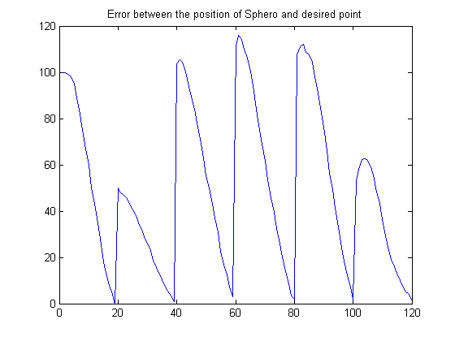

Sphero Motion Control
This example shows how to control the motion of a Sphero using the Sphero Connectivity Package
Contents
Introduction
In this example, we will use the data received from the onboard sensors of the Sphero to perform closed loop control of the motion of the Sphero. We will provide a set of points that we want the Sphero to pass through. The data from the sensors will be used to estimate the current position of the Sphero, which will be used by the controller to compute the speed and angle with which the Sphero will be commanded to move.
Prerequisites
It is helpful to complete the Getting Started with Sphero Connectivity Package example.
Create a Sphero object (if it does not exist)
if ~exist('sph','var'), sph = sphero(); % Create a Sphero object end % make sure the object is connected connect(sph); % ping it result = ping(sph); % interrupt the example if ping was not successful if ~result, disp('Example aborted due to unsuccessful ping'); return, end
The Bluetooth name of the device that you would like to connect to can be specified when using the sphero command, instead of searching for all the paired devices.
Turn on handshaking in order to make sure that the Sphero is able to receive and respond to messages. Also, calibrate the orientation of the Sphero so that it points in the desired direction, before we start moving it around.
sph.Handshake = 1; %Turn on handshaking sph.BackLEDBrightness = 255; calibrate(sph, 0); %Calibrate the orientation of the sphero. Use this % command with different values of the angle in order to orient the Sphero in the desired direction.
Specify the points to be traversed
Specification of the x and y coordinates of the points to be traversed on the plane (in cm):
despoints = [0 100;
-50 100;
50 75;
-50 25;
50 0;
0 0];
numpoints = size(despoints, 1);
%Read the current location of the Sphero
[xstart, ystart, ~, ~, groundspeed] = readLocator(sph);
% Plot the points to be traversed
labels = cellstr(num2str([1:numpoints]') ); % labels correspond to the order in which the points are to be traversed
figure(1)
clf
plot(despoints(:, 1), despoints(:,2), 'b+')
text(despoints(:,1), despoints(:,2), labels, 'VerticalAlignment','bottom', ...
'HorizontalAlignment','right')
title('Points to be traversed');
axis([-100 100 -50 150])
hold on
plot(double(xstart), double(ystart), 'ko');
hold off
Specify the other parameters that are used in controlling the Sphero:
tfinal = 30; % Time limit on the motion of the Sphero stopRadius = 3; % Radius of the circle around the point, within which the Sphero should try to stop maxspeed = 150; % Max speed for saturation minspeed = -150; % Min speed for saturation restartspeed = 50; % Minimum speed required to restart the Sphero, if it % stops at a point where it is not supposed to stop. This minumum speed is % required to get the Sphero to start moving again, due to its inertia % Controller gains Kp = 1; Ki = 0.1; Kd = 0.1; % Initialize the variables to store the x, y coordinates of the points that % the Sphero actually goes through, and the distance from the desired point xlog = []; ylog = []; distlog = [];
Closed loop control of Sphero to traverse specified points
Initialize the variables for traversing the points:
idx = 1; xcur = double(xstart); ycur = double(ystart); t0 = cputime;
Run the while loop until the timout occurs, or when all points have been traversed. The control_sphero function implements the PID Controller, which outputs the desired speed of the robot, based on the distance between the current point and the next point that has to be reached.
while(cputime-t0<tfinal) && idx<=numpoints xdes = despoints(idx, 1); ydes = despoints(idx, 2); % Angle and distance calculation % Angle by which the Sphero should be rotated and the distance that it % should move by in order to reach desired position. % The angle is measured with respect to the Sphero's y-axis % (or orientation of sphero) angle = rad2deg(atan2(double(xdes-xcur), double(ydes-ycur))); dist = sqrt((xdes-double(xcur)).^2 + (ydes-double(ycur)).^2); %Distance or the error %Clear the persistent variables in the function, from the previous run. %If these variables are not cleared, the error values from the previous %run will be used, which can cause issues control_sphero(dist, double(groundspeed), Kp, Ki, Kd, stopRadius, maxspeed, minspeed, restartspeed, 1); while dist>stopRadius speed = control_sphero(dist, double(groundspeed), Kp, Ki, Kd, stopRadius, maxspeed, minspeed, restartspeed, 0); % Move the robot in the desired direction (specified by the 'angle' % with regards to the y-orientation of the sphero) result = roll(sph, speed, angle); % Read the current position and speed of the robot [xcur, ycur,~, ~, groundspeed] = readLocator(sph); % Angle and distance calculation angle = rad2deg(atan2(double(xdes-xcur), double(ydes-ycur))); dist = sqrt((xdes-double(xcur)).^2 + (ydes-double(ycur)).^2); %Distance or the error xlog(end+1) = xcur; ylog(end+1) = ycur; distlog(end+1) = dist; end %Increment the index to the next point that has to be traversed idx = idx+1; end brake(sph);
Plot the result
hold on plot(xlog, ylog, 'rx'); hold off legend('Desired points for traversal', 'Starting location', 'Motion of Sphero') figure(2) plot(distlog) title('Error between the position of Sphero and desired point')


Disconnect the Sphero
disconnect(sph);
%Clear the persistent variables in the control function
control_sphero(dist, groundspeed, Kp, Ki, Kd, stopRadius, maxspeed, minspeed, restartspeed, 1);
Summary
This example introduced an application example where the motion of the Sphero is controlled based on the onboard readings, in order to trasverse certain points on the plane.
More About
See Also
Sphero Connectivity Package Examples
Copyright 2015, The MathWorks, Inc.